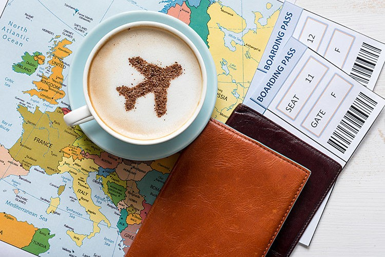

5 DICAS PARA VIAJAR NO FERIADO GASTANDO BEM POUCO!
Viajar é muito bom e uma paixão universal. Explorar um novo local completamente diferente, praticar atividades radicais ou simplesmente relaxar à beira do mar... Viajar é democrático, pois existem atrações para todos os gostos. Sabemos então que viajar é um desejo e uma meta que a grande maioria das pessoas desejam, no entanto, nem sempre as viagens e destinos cabem em nosso bolso. Você com certeza já viu diferentes matérias em revistas e redes sociais de pessoas que conseguem viajar o mundo gastando pouco. Não vamos te apresentar o passo a passo para isso, mas iremos te apresentar dicas, serviços e produtos que podem facilitar a sua programação e economia para aquela viagem que você tanto deseja no feriadão ou nas suas tão esperadas férias.
Você está enganado. Pessoas como nós, meras mortais, que adoram comprar por impulso aquelas coisas que não precisamos tanto (ou que nem precisamos mesmo); aprenderam a lidar com o dinheiro e resolveram expor suas experiências em vídeos. Então chegou a hora de enfrentar esse assunto e aprender um pouco. Vem ver os 5 vídeos que selecionamos para te ajudar na hora de controlar os gastos e alcançar as suas metas!
1. Acumule milhas
As milhas chegaram para ficar. Programas de fidelização funcionam e as empresas estão sabendo se aproveitar disso. Desde restaurantes self-service em bairros corporativos à grandes companhias aéreas já perceberam que o cliente quer continuar com aquela empresa que fornece benefícios para seus clientes mais fiéis. Existem vários programas de milhas no Brasil que podem te ajudar a economizar na sua passagem aérea, entre eles: TAM Fidelidade; Tudo Azul e Amigo, das companhias TAM, Azul e e Avianca, respectivamente.
No entanto, os programas de milhagem para terem maior eficácia devem estar atrelados a um cartão de crédito que forneça o benefício. Não deixe de entrar em contato com a sua companhia de cartão de crédito e conhecer os benefícios. Cada cartão possui uma política diferente. O segredo principal vai para os empresários e investidores. Cadastrar o seu cartão corporativo em um programa de milhagem pode garantir passagens internacionais ida e volta todas as suas férias de fim de ano, dependendo dos gastos da sua empresa, claro.
Não perca tempo, procure hoje pelo melhor programa de milhagem para o seu cartão de crédito. Existem inclusive alguns sites e aplicativos que te ajudam a organizar e guardar os seus pontos como o MultiPlus. O MultiPlus registra todas as suas milhas acuuladas e te dá avisos com antecedência quando cada milha estiver próxima do vencimento. Te ajuda bastante!
2. Conheça os Hostels
Ficar hospedado em um hotel 5 estrelas, com café da manhã luxuoso, piscina gigantesca e serviço all-inclusive é um luxo e agrada até as pessoas mais simples. No entanto, serviços como os mencionados acima podem custar muito caro, e, na maioria das vezes, saem muito mais caro que a própria passagem aérea, jogando toda a sua economia com passagem por água abaixo.
Quando você viaja pela experiência, para explorar o local você pode se apaixonar pelos hostels. Tanto no Brasil quanto no exterior, os hostels oferecem ambientes aconchegantes e descontraídos. A atmosfera dos hostels é de compartilhamento e diversidade, onde você vai conhecer e interagir com pessoas que podem estar vindo de diferentes partes do mundo. Já fiquei em um hostel onde no mesmo quarto tinha uma pessoa de cada continente diferente.
Antes de me aprofundar mais nos hostels preciso te ensinar a saber se realmente o hostel escolhido por você é bom, seguro, bem localizado, barato e sobre o sistema de quartos. O melhor site para isso é o HostelWorld. Acessando o site você consegue colocar a sua localização, para onde deseja ir, quanto tempo quer ficar e quantas pessoas estão viajando com você. Ele vai te mostrar todos os hostels disponíveis naquela cidade e você pode escolher o melhor baseado em localização, preço, quartos ou as notas dos usuários.
Quando você viaja para fora do Brasil os hostels são ainda mais atrativos, pois você paga por dia de uso e tem liberdade de ir para outra cidade e volta quando bem entender. No entanto, é importante prestar atenção em alguns detalhes. Em países localizados no Oriente Médio e Ásia, por exemplo, casais devem ficar em quartos separados, a menos que mostrem certidão de casamento. Então se pretende viajar com namorado ou namorada deve ficar atento a esses detalhes.
3. Fique de olho nas promoções
Ficar atento às promoções de passagens aéreas e quartos de hotéis costumava demandar muito tempo. Você tinha que ficar de olho nos banners de agências de viagem no shopping ou entrar no site quase que diariamente para conferir as novidades. Hoje em dia, está tudo muito, mas muito mais fácil.
A maioria dos sites que fazem intermediação de passagens e hotéis, assim como Decolar, Trivago, Booking, e outros oferecem a opção de alertas. Os alertas significam que você pode selecionar para onde quer viajar e as datas da sua viagem. Eles vão te mostrar os valores dos voos e dos hotéis e te perguntar se você quer ativar os alertas. Ative! Sempre!
Os alertas vão te avisar quando o preço daquela mesma passagem que você selecionou abaixar. Se você ainda assim achar caro, ele vai continuar te alertando sobre os novos valores, portanto, mesmo que um dia antes da viagem a companhia resolva reduzir o preço em 50% para conseguir preencher os assentos daquele voo, você será notificado e pode fazer as malas imediatamente e ir para o aeroporto. Economizar em viagens, então, fica ainda mais fácil quando você tiver flexibilidade de datas. Por esse motivo que não listamos a dica que todo mundo já sabe: viaje fora da alta temporada. Mas sabemos que não é todo mundo que tem essa flexibilidade.
Outra dica de site/aplicativo que oferece alertas é o Melhores Destinos. Com o App instalado no seu celular, ele vai te avisar sempre que alguma passagem aérea estiver muito barata (na maioria das vezes com descontos acima de 50%), mesmo que você não tenha colocado aquele destino nas suas buscas. Dessa maneira, você consegue aproveitar a promoção assim que ela estiver disponível.
4. Seja criativo na escolha do seu destino
Destinos muito conhecidos possuem alta demanda. Se você tem conhecimento mínimo de economia ou sabe analisar o mundo ao seu redor sabe que isso significa que o próprio mercado irá automaticamente aumentar os preços relacionado a esse destino. O brasileiro viaja muito a destinos como Miami, Orlando, Paris, New York, entre outros. As companhias aéreas sabem disso, e com os voos para esses destinos quase sempre lotados elas sabem que não precisam reduzir os preços. Na verdade, o que podemos observar atualmente é a maior oferta de voos diretos do Brasil para esses destinos. A Azul, por exemplo, inaugurou recentemente um voo que sai de Belo Horizonte direto para Orlando.
Por esse motivo, se conheça e Seja Criativo! Pesquise, conheça, leia revistas de viagem. Todo mundo sabe que a viagem começa muito antes de embarcar no avião. A pesquisa, conhecer a história do destino, saber os melhores lugares para visitar, pedir e receber dicas, tudo isso já é uma experiência maravilhosa.
Nas suas pesquisas você pode conhecer destinos que podem te proporcionar até mais do que você procurava e com valores muito menores. Fique de olho em destinos exóticos e muitas vezes na própria América do Sul. Muitas vezes os banners e blogs de viagem te guiam para as praias de Cancún e Miami, mas com uma rápida pesquisa você encontra praias paradisíacas e com melhor infraestrutura no Brasil, na própria América do Sul e países menos visitados pelos brasileiros como India e Egito. Seja criativo! O mundo é enorme, e tem muito o que ser explorado. Não repita o roteiro do seu amigo de faculdade ou escritório, faça o seu próprio e tenha uma experiência única. Você economiza e quem sabe não pode vir relatar sua experiência e economia no nosso blog?
5. Controle os seus gastos na viagem
Viajar é se permitir, é sair da rotina, é aproveitar. Quando viajamos, na maioria das vezes, nós esquecemos todas as regras que seguimos no nosso dia a dia. Acabamos comprando aquela bolsa que você nunca compraria se estivesse na sua casa. Você compra aquele videogame de última geração que você também não compraria se não estivesse viajando.
Sendo assim, use e abuse dos cartões de crédito e bancos que te oferecem aplicativos para o controle de gastos. Muitos deles, como o próprio Nubank e o Banco Inter oferecem ferramentas que te permitem estipular um limite de gastos. E toda vez que você passa o cartão, ele te avisa a quantidade de dinheiro para gastar você ainda tem disponível. Isso te ajuda no controle e você volta para casa sem a preocupação de pagar as contas pós-viagem.
Controle de gastos é muito importante e listamos para você vários aplicativos, bancos e cartões de crédito que te permitem isso. Está tudo listado no nosso e-Book MARAVILHOSO! Baixe já e nos dê o seu Feedback.
Quero Receber mais conteúdos
E assim que comprar a sua passagem barata para viajar, não deixe de nos convidar <3